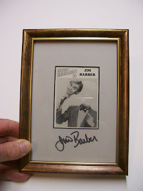

#39 Ventrilo-Card
3/24/2010
{kind=link}

Jim Barber
Set #4; Card #3
Jim Barber received a Danny O'Day for Christmas when he was ten, and proceeded to teach himself ventriloquism. During college he hosted two U.S.O. tours, as well as co-hosted and produced a TV show. He was the first vent to perform aboard Opryland's "General Jackson Showboat" in Nashville, Tenn.
Famous for his unique approach to the art as well as his trademark characters "Barber and Seville," Jim has become a popular corporate, club and college artist. He has appeared on numerous national TV shows and toured over 1,200 colleges across the U.S. He created a sensation as the featured comedian at the Glen Campbell Goodtime Theater in Branson, MO.
In 1989, Jim was honored with the National Association of Campus Activities' "Comedy Entertainer of the Year" and was Ventriloquist of the Year in 1990. Copyright 1995 OO-LA-LA, INK.
* * * * * *
The framed and AUTOGRAPHED Jim Barber Ventrilo-card pictured above will be awarded in our next drawing.